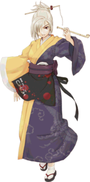

- Welcome to Touhou Wiki!
- Please register to edit. For assistance, check in with our Discord server or IRC channel.
Rumi Arie
Rumi Arie | |
|---|---|
|
 Rumi Arie in Uwabami Breakers The Famous Mama-san of Bars and AlcoholMore Character Titles | |
| Nickname |
Ariko (アリコー) |
| Species |
Human (native to the Outside World) |
| Occupation |
Owner of the Twilight Bar Room, supervisor, abusing her customers |
| Location | |
Music Themes | |
| |
Appearances | |
| Official Games | |
| |
- Note: This article is part of the game Uwabami Breakers by the Doujin circle The Drinking Party.
Rumi Arie (有江 ルミ Arie Rumi) is the owner of the Twilight Bar Room who supervises her two employees. She usually abuses her customers when they don't pay their tabs. Isami Asama encounters Rumi on the second stage of Uwabami Breakers, at the bar area called the "Bar C2H5OH (Ethanol)". Isami didn't pay her tabs, so Rumi Arie attacked her.
Character Basis[edit]
Name[edit]
<add name meaning here>
Title[edit]
In her profile, she is called Mama-san, a name for a woman who works for a drinking place or may have sex work in Southeast Asia. However, because this title is originally from Japan, Mama-san is a woman who works as a supervisor at bars or nightclubs. This would suggest that she is a supervisor of the Twilight Bar Room and the owner of it. It doesn't imply that she's a mother.
Design[edit]
Rumi Arie wears a half-yellow, half-purple kimono. On her black-and-spotted-red apron is the name of the bar. She has white hair tied into a bun with a hairpin in the back, and covering one eye in the front. She holds a pipe.
Relationships[edit]
- Amakasu Barley Tenji and Tatsumi Hakkaisan
Amakasu Barley Tenji and Tatsumi Hakkaisan are both employee's to Rumi.
- Isami Asama
Isami Asama is a customer of the Twilight Bar Room, thought their relationship is unclear.
Spell Cards[edit]
Additional Information[edit]
- It's possible that Rumi, Amakasu Barley Tenji and Tatsumi Hakkaisan may know that Gensokyo exists. This is because Amakasu's favorite line is "You call that danmaku? That fight before was way worse, man" and that they use the Spell Card system.
Official Profiles[edit]
| ○二面ボス バー、アルコールの名物ママさん
「有江 ルミ」（ありえ るみ） 子供の頃のあだ名はアリコー。 それがその手の人に話題を呼んでしまい、今ではお金を払う客は居ない。 |
Stage 2 boss The famous Mama-san of bars and alcohol
Rumi Arie Her childhood nickname was "Ariko". And while we're on the subject, nowadays all of her customers are deadbeats. |
Official Sources[edit]
- 2007/12/29 Uwabami Breakers - Official profile, Stage 2